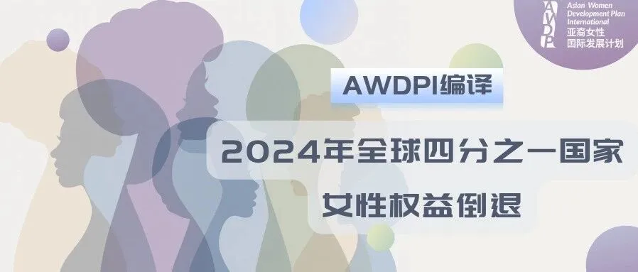
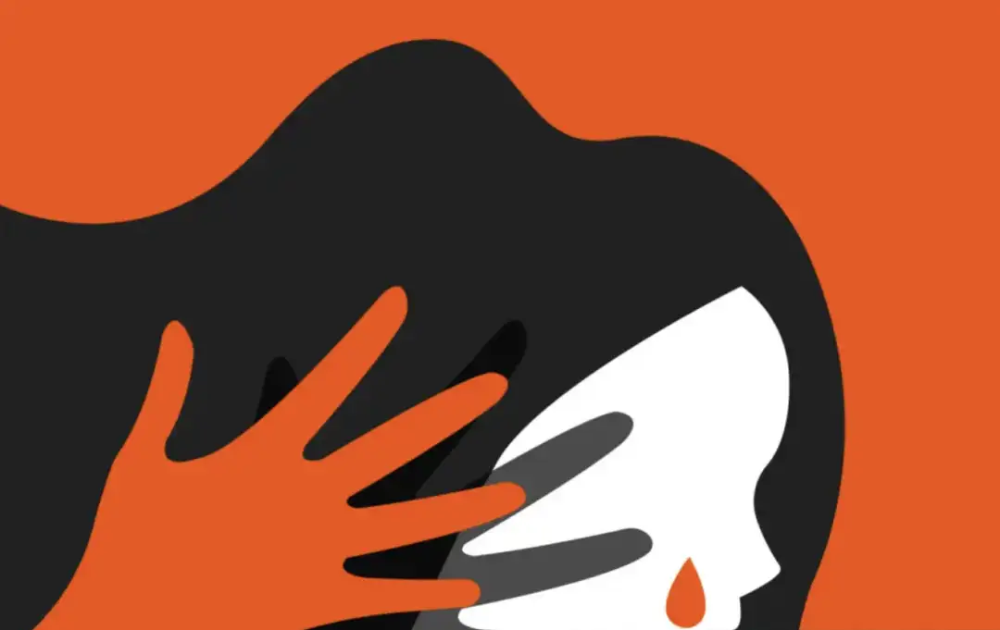
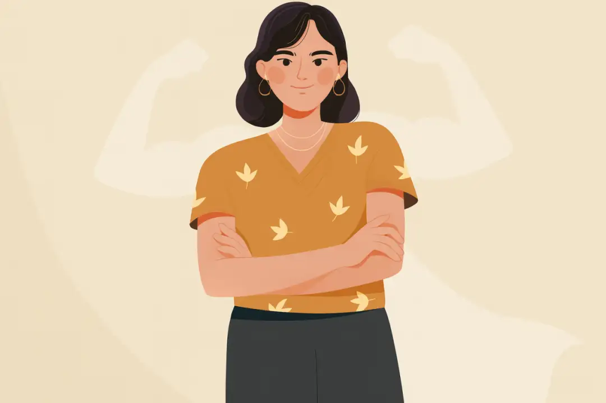

在国际妇女节来临之际，联合国妇女署呼吁所有各方支持女性和女孩的权利、赋权与平等。
2025年3月6日
全球范围内，妇女和女孩的权益面临前所未有的威胁：歧视更加严重，法律保护更加薄弱，支持和保护女性的项目与机构的资金日渐减少。
妇女署在3月8日联合国第50届国际妇女节之际发布的最新报告《北京世界妇女大会三十年后女性权益回顾》显示，2024年，全球近四分之一的政府报告称，妇女权利出现倒退。
尽管取得了重要进展，但迄今为止，只有87个国家曾由女性领导，每10分钟就有一名女性或女孩被伴侣或家庭成员杀害。数字技术和人工智能传播有害的性别刻板印象，而数字性别鸿沟限制了女性的就业机会。
在过去十年中，生活在冲突中的妇女和女孩人数增加了50%，这一现象令人不安。而女性权利捍卫者每天都在面临骚扰、人身攻击，甚至死亡威胁。近期的全球危机——如新冠疫情、气候紧急状况、飙升的食品和燃料价格——加剧了应对这些问题的紧迫性。

联合国秘书长古特雷斯说：“当女性和女孩能够崛起时，我们所有人都能共同繁荣。然而，全球范围内，女性的人权正遭遇攻击。我们并未见证权利平等成为主流，反而看到厌女思想大行其道。我们必须团结一致，坚定不移地在所有地方为所有妇女和女孩、为所有人，实现人权、平等和赋权。”
联合国妇女署执行主任巴胡斯强调：“联合国妇女署致力于确保所有妇女和女孩，无论他们身在何处，都能充分享有她们的权利和自由。性别平等和女性赋权面临着复杂的挑战，但我们将坚定不移，怀着雄心和决心继续前行。妇女和女孩正在呼吁变革——这正是她们应得的权利。”
2025年标志着自第四届世界妇女大会通过具有里程碑意义的《北京宣言和行动纲领》30年。妇女署的这份回顾报告基于159个政府提供的反馈，其中展示了必须得到认可的进展，例如，自1995年以来，女童教育实现了平等，孕产妇死亡率下降了三分之一。妇女在议会中的代表人数增加了一倍多，各国继续取消歧视性法律。在1995年至2024年期间，189个国家和地区进行了1,531项法律改革。报告表明，当妇女的权利在她们的国家得到充分保障时，家庭、社区和经济便能繁荣昌盛。
然而，要实现性别平等，并使我们更接近2030年可持续发展议程的目标，仍然需要付出巨大努力。报告提出了新的《北京+30行动议程》，这是一个雄心勃勃的路线图，旨在通过聚焦以下方面来完成我们未竟的事业：
面向所有妇女和女孩的数字革命：我们必须确保对技术的平等获取，赋予妇女和女孩引领人工智能和数字创新的能力，并保障她们的在线安全和隐私。
摆脱贫困： 需要对全面社会保障、全民健康覆盖、教育和强有力的护理服务进行投资，以帮助女性和女孩茁壮成长，并创造数百万个绿色和体面的工作岗位。
零暴力：各国必须通过并实施立法，结束一切形式的暴力侵害妇女和女孩的行为，并制定资源充足的计划，包括支持在响应和预防前线的社区组织。
完全平等的决策权：在这方面，如性别配额等临时特殊措施已证明其在迅速提高女性参与度方面的有效性。
和平与安全： 为有关妇女、和平与安全的国家计划以及促进性别平等的人道主义援助提供充足资金至关重要。前线妇女组织往往是危机中的第一响应者，必须获得专门的、持续的资金支持，以建设持久和平。
气候正义：必须优先考虑女性和女孩在气候适应中的权利，聚焦她们的领导力和知识，并确保她们从新的绿色工作中受益。

在这六项行动中，将年轻妇女和女孩置于核心位置，是确保行动在当下和未来成功的最佳方式。新提出的六项行动有望推动妇女权利事业取得突破性进展，使我们重回2030年可持续发展目标的轨道。
《北京+30行动议程》与即将召开的联合国妇女地位委员会第69届会议，正是将这一行动议程纳入国家政策、区域战略和全球协议的良好契机。
对于妇女和女孩来说，2025年是关键的一年，也是前所未有的挫折和危机之年，让我们推动妇女权利，创造一个所有妇女和女孩都享有平等权利和机会的世界， 让我们成为生活在平等世界的第一代人。
本文由 AWDPI 编译，仅供分享参考，观点不代表本组织立场。版权归原作者所有。
参考链接：
《北京世界妇女大会三十年后女性权益回顾》
https://www.unwomen.org/en/digital-library/publications/2025/03/womens-rights-in-review-30-years-after-beijing
原文链接：
https://www.unwomen.org/en/news-stories/press-release/2025/03/one-in-four-countries-report-backlash-on-womens-rights-in-2024
官方译文：https://news.un.org/zh/story/2025/03/1136631
译文整理｜张世嘉
排版&封面｜吴雨桐
图片｜Pixabay